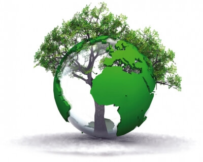
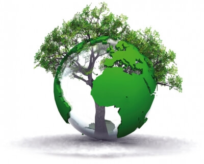

"L'ecologia (dal greco: οἶκος, oikos, "casa" o anche "ambiente"; e λόγος, logos, "discorso" o "studio") è l'analisi scientifica delle interazioni tra gli organismi e il loro ambiente.
L'ecologia affonda le sue radici negli studi naturali degli antichi greci, tra cui Teofrasto, amico e collega di Aristotele, che per primo descrisse le interrelazioni tra gli organismi e tra gli organismi e l'ambiente. Il termine "ecologia" è stato coniato nel 1866 dallo scienziato tedesco Ernst Haeckel (1834-1919) nel libro Generelle Morphologie der Organismen.
Tra gli argomenti trattati dall’ecologia vi sono i processi biogeochimici, le interazioni tra organismi, e le strategie adattative; il trasferimento di materia e di energia attraverso gli ecosistemi; le dinamiche evolutive degli ecosistemi e la biodiversità.
L'ecologia affronta l'intera scala della vita, dai batteri ai processi che interessano l'intero pianeta. Gli ecologi studiano molte diverse relazioni complesse tra le specie, come predazione e impollinazione. La diversità della vita è organizzata in differenti habitat, da terrestre ad acquatico."
Effetti del cambiamento climatico: il bilancio del 2021
5 Gennaio 2022 by ilgiornaledellambiente.it, Chiara Mazzamauro
"Molti sono gli eventi internazionali svolti durante questo 2021 che hanno affrontato il problema del cambiamento climatico, come Youth4Climate: Driving Ambition, G20 e COP 26."
"La Harmony Foundation, organizzazione con sede a Mumbai, India, ha premiato la Danimarca per essere “una delle nazioni del mondo che vive in armonia con la natura”."
 
